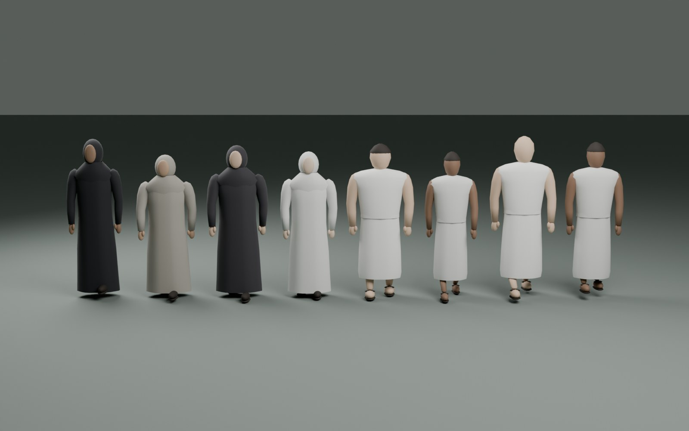
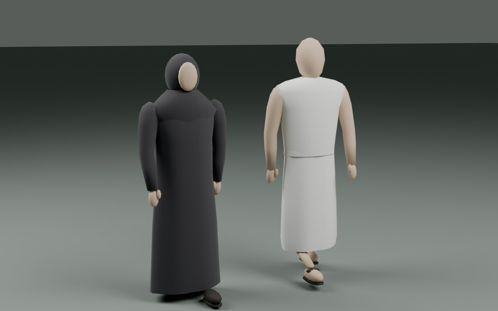

Umrah tour · first visual milestone
Landmarks and people, seen closer
Shared landmark models now have draped cloth, a separate door and curtain,
a sloping marble base, a recessed Black Stone surround and an open Maqam
enclosure. Eight new pilgrim silhouettes add shaped shoulders, hands,
footwear and varied clothing. These fixed views were rendered on a rented NVIDIA H100.

New pilgrim silhouettesEight bodies, shared by both tours

Clothing and walking posesLightweight geometry for the live tour
Kaaba area